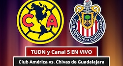
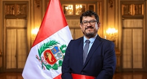

El Poder Ejecutivo oficializó este fin de semana la designación de José Tangherlini como el nuevo titular del Ministerio de Transportes y Comunicaciones (MTC). El nombramiento se produce en un momento crucial para destrabar proyectos de infraestructura de gran envergadura a nivel nacional.
A través de una edición extraordinaria de las Normas Legales del diario oficial El Peruano, el Gobierno formalizó la llegada de Tangherlini al frente de una de las carteras ministeriales con mayor presupuesto e impacto directo en la reactivación económica del país. El nuevo ministro asume sus funciones con el encargo prioritario de acelerar la ejecución presupuestal y garantizar la transparencia en los procesos de licitación pública.

José Tangherlini llega al Ministerio de Transportes y Comunicaciones con una sólida trayectoria en el sector público y privado relacionada con la gestión de proyectos de ingeniería y transporte. Su nombramiento ha sido recibido con expectativas moderadas por parte de los gremios de transportistas y cámaras de comercio, quienes reclaman una solución definitiva a la crisis logística que afecta las principales vías del país.
Entre los principales retos que figuran en la agenda inmediata del nuevo ministro destacan la continuidad y supervisión de las obras de la Línea 2 del Metro de Lima, el desarrollo de la red vial nacional, la conectividad digital en las zonas rurales más alejadas y la modernización de los puertos y aeropuertos regionales.
Durante los últimos meses, el MTC ha enfrentado cuestionamientos debido a retrasos en la ejecución de diversas obras viales tanto en la costa como en la sierra y la selva peruana. Con la designación de Tangherlini, el Ejecutivo busca imprimir una dinámica de gestión más eficiente, orientada a resultados tangibles que beneficien directamente a la ciudadanía.

Asimismo, los especialistas señalan que uno de los flancos más críticos que deberá atender el nuevo titular será el fortalecimiento de la infraestructura de telecomunicaciones, indispensable para reducir la brecha digital y asegurar que la educación y la salud a distancia lleguen a las poblaciones más vulnerables del territorio nacional.
Diversos sectores políticos y económicos ya han manifestado su disposición para entablar mesas de diálogo con el nuevo ministro. Sin embargo, también han advertido que fiscalizarán de cerca el cumplimiento de las metas prometidas, especialmente en lo que concierne a la seguridad vial y la regulación del transporte interprovincial.
Se espera que en el transcurso de los próximos días, José Tangherlini brinde su primera conferencia de prensa oficial para detallar los lineamientos estratégicos de su gestión y presentar a su equipo de viceministros y asesores de confianza, marcando así el inicio formal de su administración al frente del MTC.